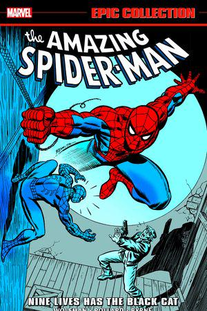
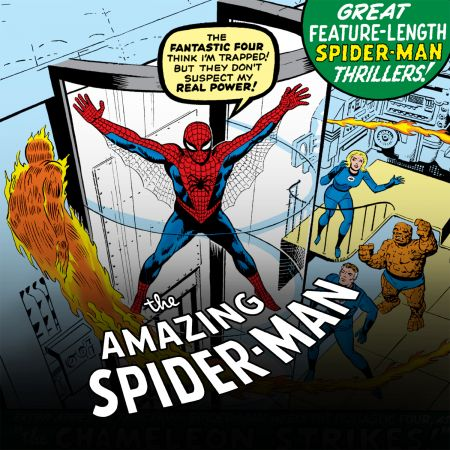
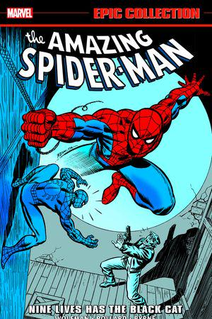
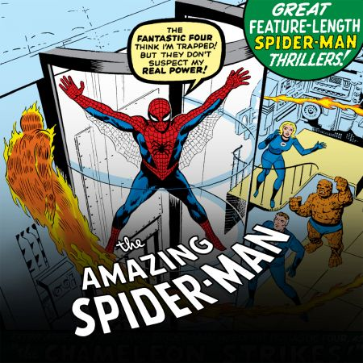
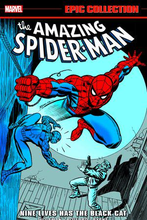
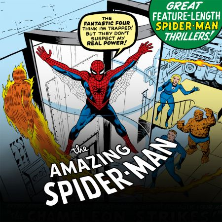

Spider-Man is a superhero is American comic books pulished by Marvel Comics. Created by writer-editor and artist Steve Ditko, he first appered in the anthology comic book Amazing fantasy #15 (August 1962) in the Silver Age comic Books He has been featured in comic book, television shows, files, video games, novels, and plays
Collects Amazing Spider-Man (1963) #186-206 and Annual (1964) #13 and Spectacular Spider-Man Annual (1979) #1. AMAZING SPIDER-MAN reaches its historic 200th issue! Marv Wolfman, Keith Pollard and John Byrne have entered the web and are here to prove why Spidey has become the world's favorite super hero. Sure, there are tenacious villains to fight, but the true drama comes from the life of Peter Parker. As AMAZING SPIDER-MAN swings toward a landmark 200th issue, Peter's ailing Aunt May is hanging on by a thread. When the man who killed Uncle Ben returns, Peter is faced with a chilling choice. Then, Felicia Hardy - the Black Cat - makes her first appearance, Mysterio weaves his illusions, Spidey faces Doc Ock in an Annual extravaganza and a gang war forces a team-up with the Punisher! With a little disco Dazzler for added excitement, you'll love every page.

